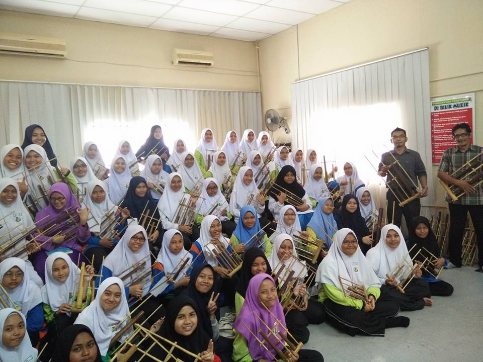
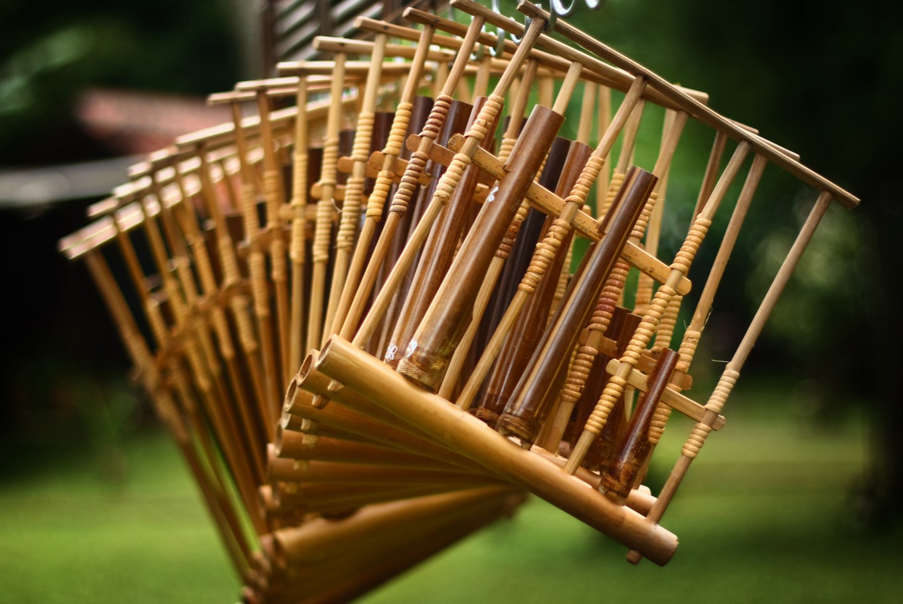

|  |

During my highschool life, I used to join Angklung Club of Smk Sultanah Bahiyah. I have learned how to play songs just by using Angklung.
Angklung is a musical instrument from West Java, Indonesia made of a varying number of bamboo tubes attached to a bamboo frame.
The tubes are carved to have a resonant pitch when struck and are tuned to octaves, similar to Western handbells.
The base of the frame is held in one hand, while the other hand shakes the instrument, causing a repeating note to sound.
Each performer in an angklung ensemble is typically responsible for just one pitch, sounding their individual angklung at the appropriate times to produce complete melodies.
I have joined many competition and many performance during my highschool. One of the competition that I have joined is SEAMEO Song Angklung International Contest in 2016.
Besides, one of the performance that I always joined is Hari Penyayang that have been done every year at Stadium Alor Setar, Kedah. By joining in this club during highschool,
I have gained a lot of experiences especially on how to meet people and I also have known many people that I can be friends with.